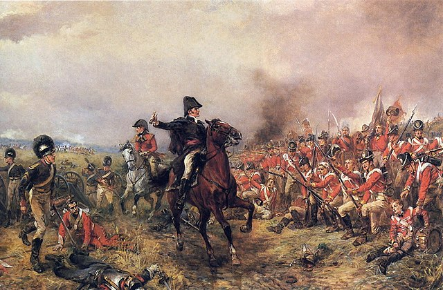

The Battle of Waterloo (1815)
The Battle of Waterloo, fought on June 18, 1815, was a pivotal conflict during the Napoleonic Wars. It marked the final showdown between Napoleon Bonaparte and the coalition forces led by the Duke of Wellington and Gebhard Leberecht von Blücher. Napoleon, seeking to regain power after his exile, faced off against the British, Dutch, Belgian, and Prussian armies near the town of Waterloo in present-day Belgium.
The battle began with a French assault on the British-held farmhouse of Hougoumont and the village of La Haye Sainte. Despite fierce resistance, the French managed to capture Hougoumont but failed to take La Haye Sainte, which served as a key defensive position for the British. Meanwhile, the Prussian army under Blücher engaged the French right flank, diverting Napoleon's attention and forcing him to split his forces.
As the day progressed, both sides suffered heavy casualties. The arrival of the Prussian reinforcements on the battlefield tipped the scales in favor of the coalition forces. With his army outnumbered and exhausted, Napoleon launched a desperate final assault, known as the "Attack of the Old Guard," but it was repelled by the British and their allies. Eventually, Napoleon's forces were routed, leading to his final abdication and subsequent exile to the island of Saint Helena.
The Battle of Waterloo is remembered as one of the most significant conflicts in European history, effectively ending Napoleon's rule and reshaping the balance of power on the continent. It symbolizes the defeat of authoritarian rule and the triumph of coalition warfare, marking the beginning of a new era of peace and stability in Europe.
Battle Location
| France | UK + Allies | |
|---|---|---|
| Leader | Napoleon I | Arthur Wellesley |
| Strength | 73,000 | 120,000 |
| Losses | 27,000 | 24,000 |
| Victorious? | No | Yes |